How to install x86_64 version of Slackware Linux version 13.37 from 2011.
The slack64.sh that follows is a live literate program [1].
slack64.sh:#!/bin/sh
# https://ctarbide.github.io/pages/2024/2024-02-05_12h00m11_hello-worlds/
# https://github.com/ctarbide/coolscripts/blob/master/bin/nofake-exec.nw
set -eu; set -- "${0}" --ba-- "${0}" "$@" --ea--
SH=${SH:-sh}; export SH
exec nofake-exec.sh --error -Rmain "$@" -- "${SH}" -eu
exit 1
This is a live literate program.
<<base image>>=
slack64-base.qcow2
@
<<backed image>>=
slack64.qcow2
@
<<base image size>>=
20G
@
stat's ctime is not portable/reliable, use mtime of a different file instead
<<base image created>>=
<<base image>>.created
@
<<iso installer>>=
slackware64-13.37-install-dvd.iso
@
<<main>>=
set -- "${1}" --ba-- "$@" --ea--
nofake-exec.sh --error -R'step 1 - create base image' "$@" -- "${SH}" -eu
nofake-exec.sh --error -R'step 2 - start installer' "$@" -- "${SH}" -eu
nofake-exec.sh --error -R'step 3 - create backed image' "$@" -- "${SH}" -eu
nofake-exec.sh --error -R'step 4 - first run' "$@" -- "${SH}" -eu
echo all done
@
<<step 1 - create base image>>=
if [ ! -f '<<base image>>' ]; then
qemu-img create -f qcow2 '<<base image>>' '<<base image size>>'
perl -le'print(q{mtime should be } . time)' > '<<base image created>>'
fi
@
boot installer dvd if base image was created 5 seconds ago
<<step 2 - start installer>>=
<<function time_delta>>
if [ "`time_delta '<<base image created>>'`" -le 5 ]; then
qemu-system-x86_64 -m 4096 -enable-kvm \
-monitor stdio \
-hda '<<base image>>' \
-cdrom '<<iso installer>>' \
-boot d
fi
@
<<step 3 - create backed image>>=
if [ ! -f '<<backed image>>' ]; then
chmod a-w '<<base image>>'
qemu-img create -f qcow2 -o backing_file='<<base image>>' \
-F qcow2 '<<backed image>>'
fi
@
<<step 4 - first run>>=
qemu-system-x86_64 -m 4096 -enable-kvm \
-monitor stdio \
-hda '<<backed image>>'
@
<<function time_delta>>=
time_delta(){
perl -sle'@s = stat $name; print time - $s[9]' -- -name="${1}"
}
@
<<tips>>=
### ssh connection to guest from host
in guest:
ssh -R2223:127.0.0.1:22 hostuser@10.0.2.2 'while date; do sleep 30; done'
in host:
TERM=screen ssh -p2223 slack@127.0.0.1
@
nofake -Rclean slack64.sh
<<clean>>=
rm -fv '<<base image>>' '<<base image created>>' '<<backed image>>'
@
[1]: literate program ready for execution, i.e. self-tangling
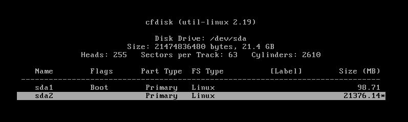
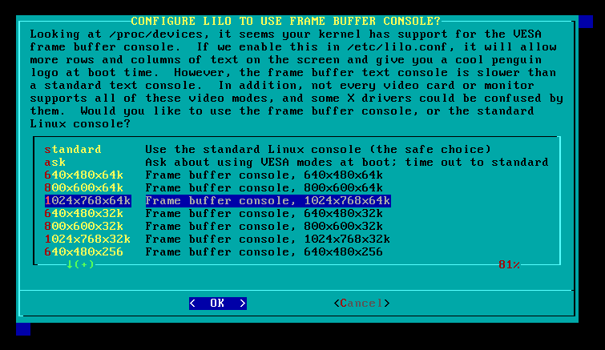
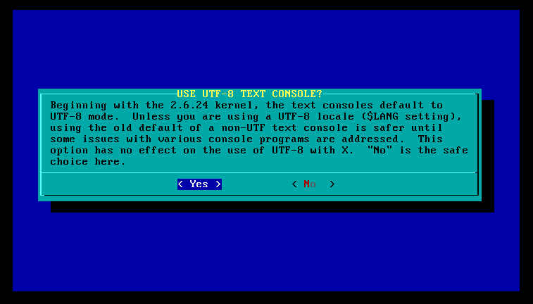
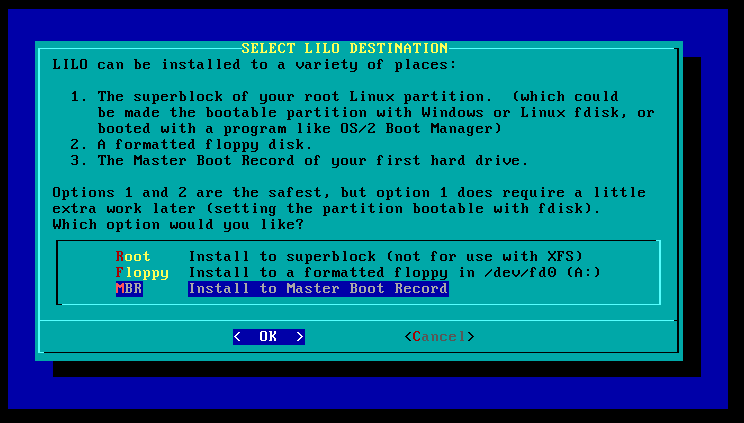
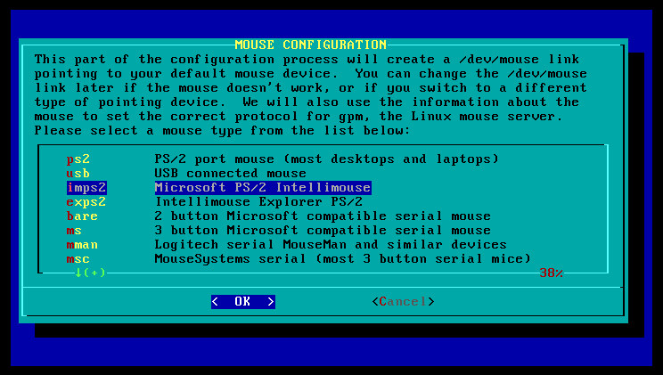
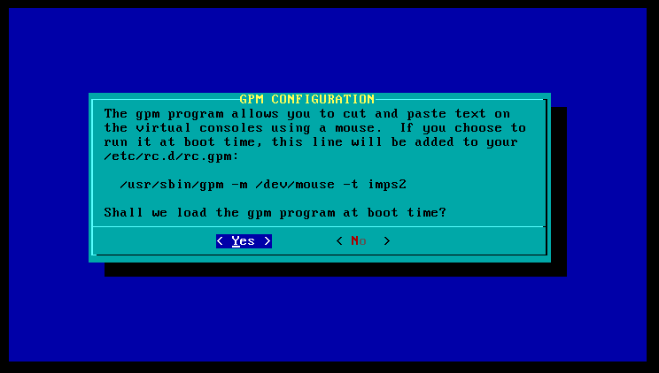
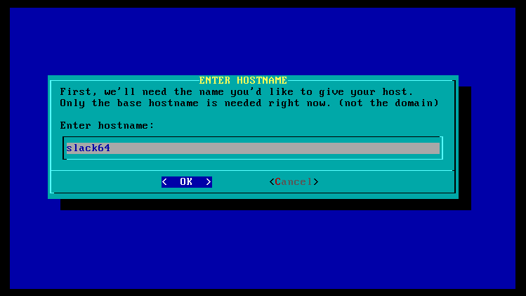
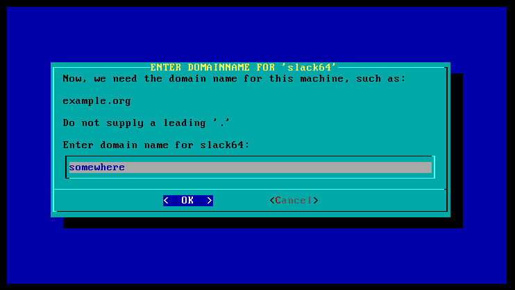
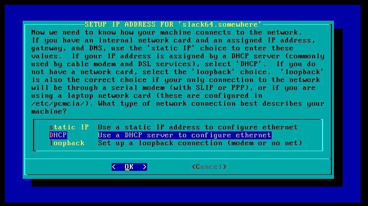
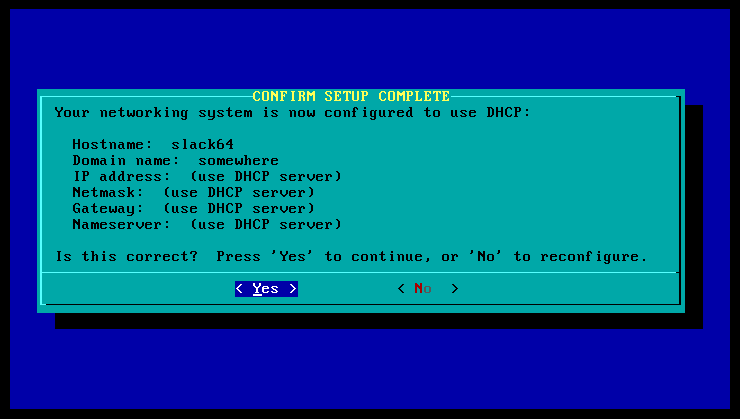
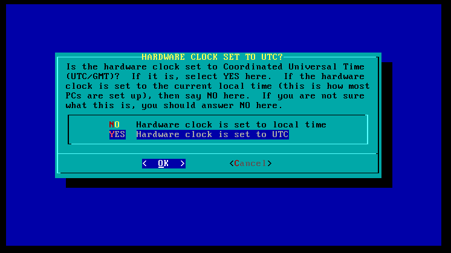
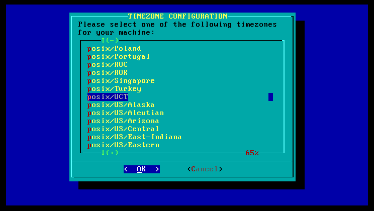
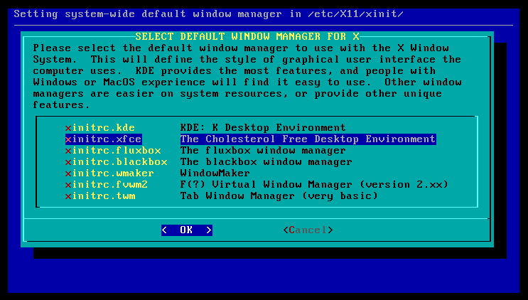
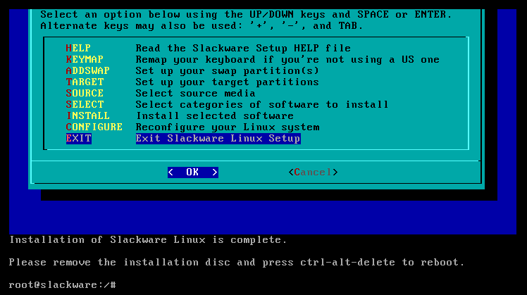
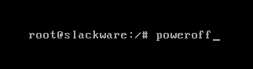
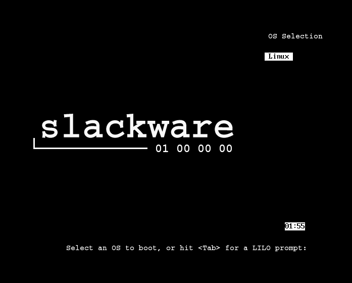
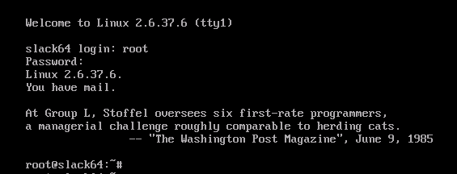
More details in the link below.
This page was last modified on February 10, 2024 at 14:03:24 UTC.